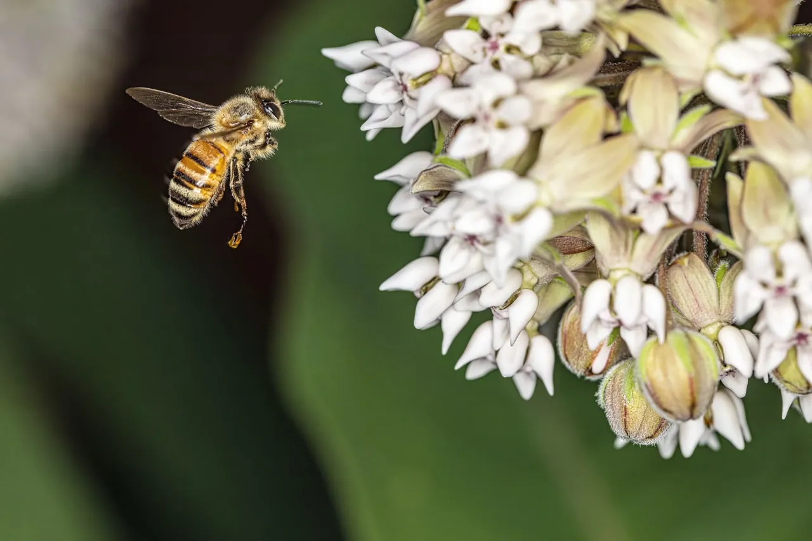
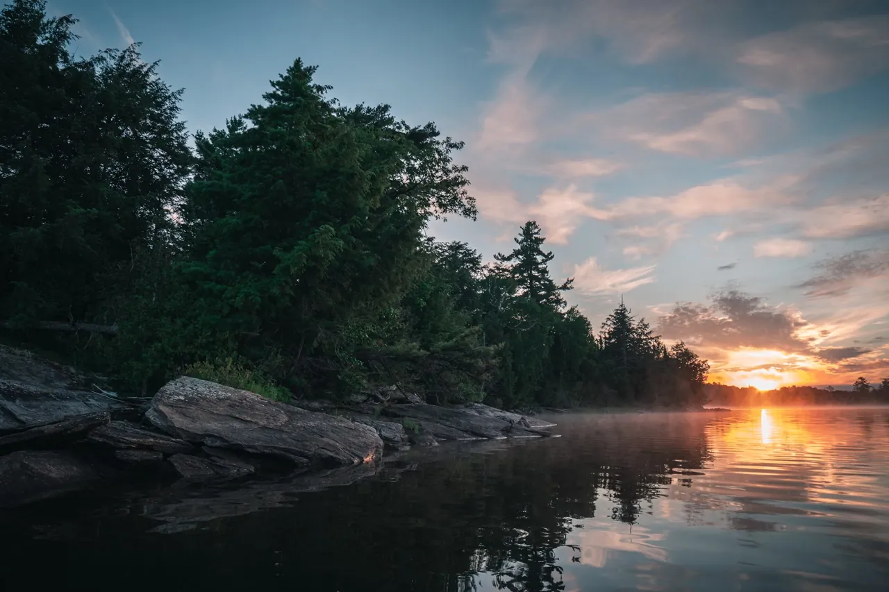
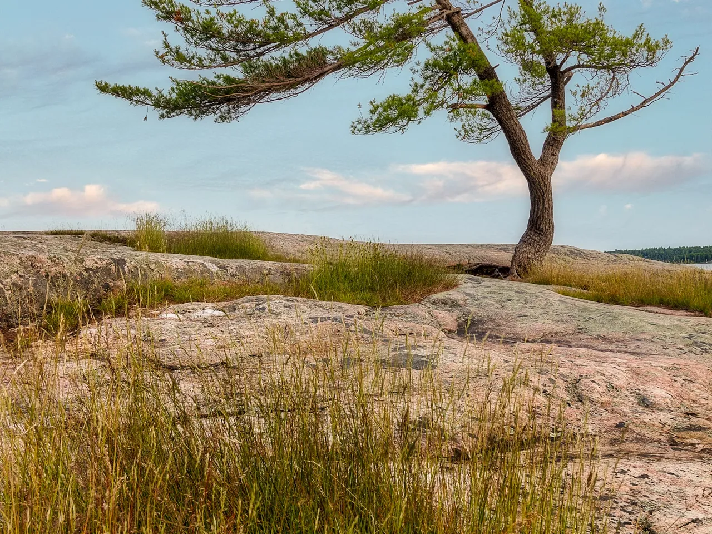
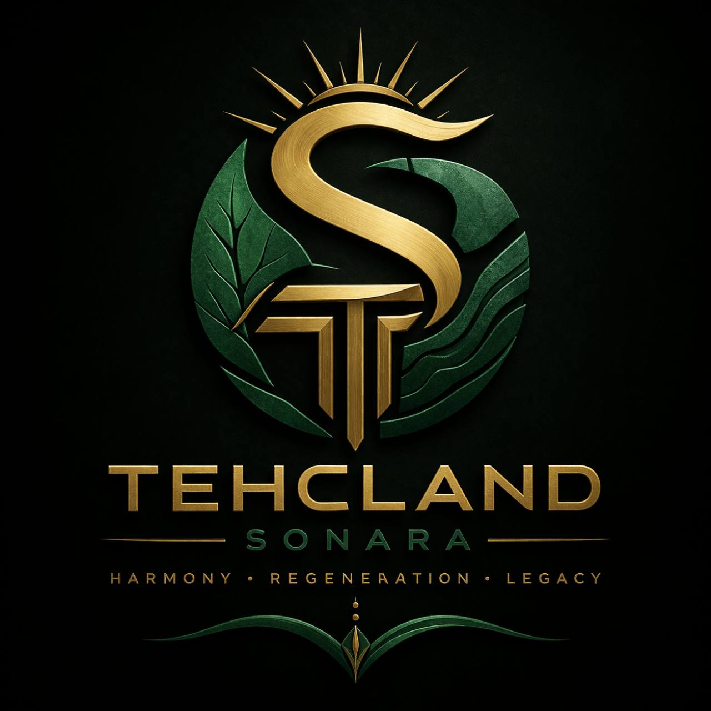
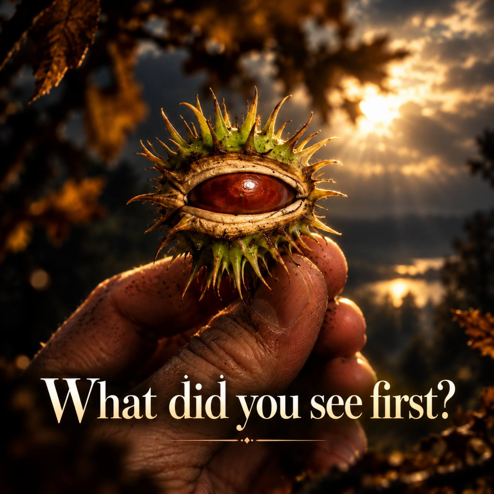

01 / Restore
Restore native habitats.
Native planting, pollinator habitats, and thoughtful care for waterways are at the heart of our restoration vision.
Our ecological prioritiesEcological restoration · Ontario
TEHCLAND is an Ontario project in development, bringing native habitat restoration and outdoor learning together with plans for a welcoming space for neurodivergent people.

Our purpose
The aim is to restore native planting and pollinator habitat, care for waterways, and make those activities a basis for practical learning. A proposed nature-based gathering space would offer quieter ways to spend time together, with sensory needs and different ways of communicating considered from the start.
What guides us
These are the priorities shaping TEHCLAND’s development, from ecological care to meaningful connection.

Native planting, pollinator habitats, and thoughtful care for waterways are at the heart of our restoration vision.
Our ecological priorities
We hope to create opportunities for practical ecological learning and exploration of responsible renewable energy.
Explore the possibilitiesA proposed gathering space with quieter participation, sensory needs, and different ways of communicating in mind.
Our shared valuesImages illustrate the project’s themes; they do not document TEHCLAND facilities or completed work.
Explore responsibly
We are interested in the potential of renewable micro-hydro generation as part of TEHCLAND’s future. Battery storage can complement renewable generation; the right approach depends on the site and its needs.
Music & visual exploration
A music and visual-art direction within TEHCLAND, exploring nature, perception, and belonging.

Harmony · Regeneration · Legacy. Supplied concept artwork for the music and visual direction.

A seedpod, an eye, or something else? An invitation to look again and find your own interpretation.
Explore the artist page on Suno. Playback is available there.
Native planting, pollinator habitat, waterway care, and outdoor learning shape the proposed project.